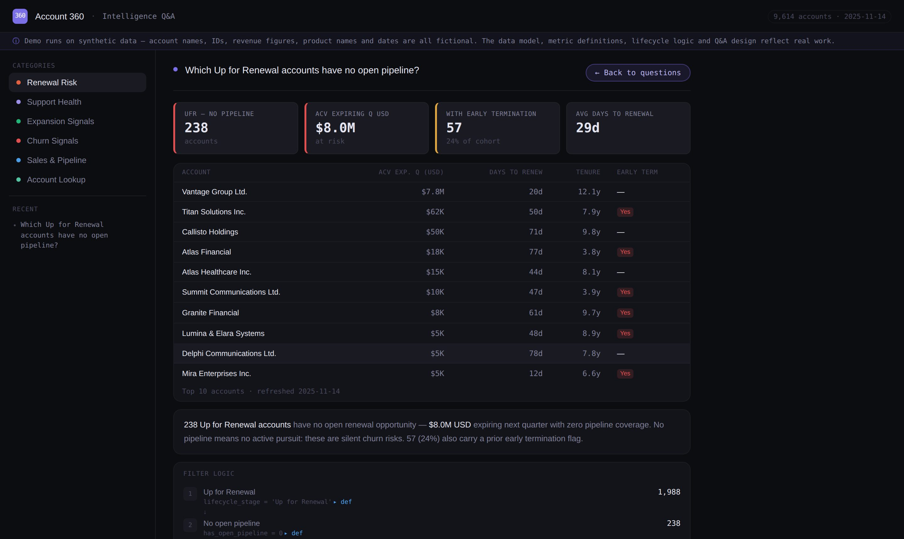

Anyone should be able to ask a question like that in plain language and trust what comes back. Account 360 consolidates multiple data domains into a single governed model, then layers AI on top to write the framing, never the numbers.
Open the demo
Account data lives across many domains, and in most companies reaching it is not the hard part. Agreeing on what it means is. Ask two teams what an active customer is and you can get two answers, both defensible. Without a definition the data itself enforces, every report rebuilds one, and the same question returns different numbers depending on who ran it.
That is what a governed model is for, and consolidating the domains is only half of it. The other half is locking the business logic inside the model, so a definition is decided once and every answer downstream inherits it rather than reinventing it.
Account 360 is one answer to that. Each data domain becomes its own block, built at account level, so an account can be read across domains instead of one report at a time. Each block is assembled independently from the same set of accounts, and any one of them can be rebuilt without disturbing the others. The business logic is locked inside the blocks rather than in the reports built on top of them.
Every signal carries its rule with it. Two of the seventy:
Two definitions in this model replaced fields that already existed. Both of those fields were populated, which is exactly why they were trusted. Neither held up when checked against the records underneath them.
Salesforce carries both as static fields, maintained manually rather than derived. Checked against the subscription records underneath them, neither held up. The model derives its own. An account is active when a subscription has an end date in the future and no termination on it, and the next renewal date is the earliest end date among those active subscriptions. Both are logic that can be read and checked.
Gainsight carries a Company Stage field, but it was 70% null and its categories did not draw the distinctions the business needed. The model defines eight stages instead, derived from subscription, pipeline and revenue signals. Evaluated as a waterfall, first matching condition wins. An account qualifying for both “Up for Renewal” and “Onboarding” gets “Up for Renewal” because urgency takes priority.
The failure mode for AI analytics is not refusing to answer. It is answering fluently and being wrong, with nothing in the output to signal it. The split below is how this one avoids that.
A question routes by keyword to one of 36 governed query functions. The function computes against the model. Every number on screen comes from code that can be read, and the filters behind each answer are shown alongside it.
Claude receives the computed aggregates and writes the business framing around them: what the pattern suggests, what it might be worth doing. It never sees raw records and never produces a figure of its own.
Source systems through to the tool, including the part that is still a snapshot rather than a live connection.
The full tool, running in the browser with no server behind it. Pick a question from one of the six categories, or look up a single account and read its profile. Answers come back with the filters that produced them.
Open the demo